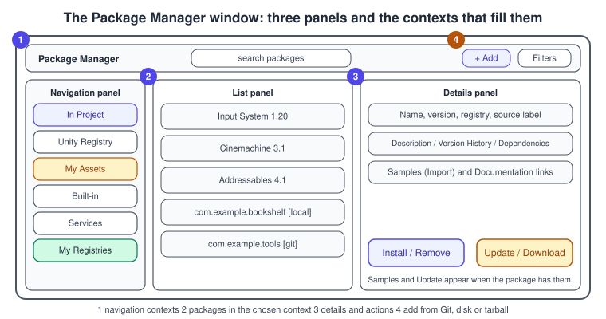
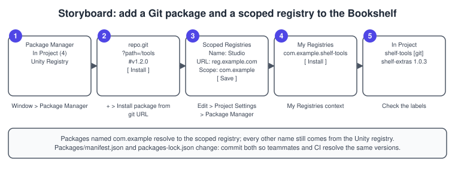
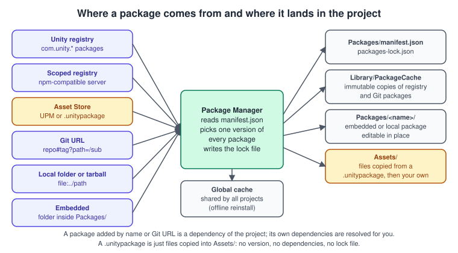

Asset Store and Packages
|
This content was generated with the assistance of AI and should be verified against the official documentation before being relied on in production. |
Almost nothing in a real Unity project is written from scratch. The Input System, Cinemachine, Addressables and the render pipelines are packages; the cover art of a book shop, a character controller or a tween library arrives from the Asset Store, from a Git repository or from a studio’s own registry. Knowing how those pieces get into a project, how their versions are chosen and what you are allowed to do with them is as much part of working in Unity as writing a script.
The facts were checked in November 2026. The page documents Unity 6.3 LTS (6000.3), whose manual is the source of every procedure. It works on Windows, macOS and Linux Editors, because the Package Manager is an Editor feature, and needs a Git client (version 2.14.0 or later) only for
Git dependencies. In the running example, Bookshelf (URP 3D template, Input System), this page adds Cinemachine from the Unity registry, a Book tools package from a Git
repository, a studio package from a scoped registry and finally the Bookshelf’s own reusable code as a local package that imports the shared
bookshelf.glb. For the framework that makes scripts live inside assemblies see
Namespaces, Assemblies and Projects.
Two kinds of package
Unity uses the word package for two different formats, and mixing them up is the source of most confusion.
| Characteristic | UPM package | Asset package (.unitypackage) |
|---|---|---|
Contents |
scripts, tools, SDKs and other reusable parts, with a standard folder layout |
art and media assets: models, textures, animations, audio |
Description file |
|
none |
Dependencies and versions |
declared, resolved and switchable in the Editor |
none; one snapshot of files |
Where the files go |
the |
|
Where it comes from |
Unity registry, scoped registry, Git, disk or Asset Store |
Asset Store or a file you were given |
Cache |
the global cache of the Package Manager |
a separate asset package cache |
A UPM package (Unity Package Manager format) is the right format for code you maintain, share between projects or want to update by changing a version number. An asset
package is the right format for a one-time import of art. A third-party Asset Store package can be either; the Asset Store introduction in the manual describes the UPM
format for the Asset Store as still in beta testing, so most Asset Store content you meet is .unitypackage.
A package also moves through a lifecycle that Unity applies to the packages it makes: experimental (version 0.x or an -exp.N suffix, unsupported), pre-release (on the release
track, supported, committed to ship within the LTS cycle) and released. A breaking change returns a released package to experimental with a major version bump
(1.2.3 to 2.0.0-exp), a compatible feature goes back to pre-release (1.3.0-pre) and a fix is a patch (1.2.4). Packages that reach their end of life are marked
Deprecated. Third-party packages are free to use any scheme, but they should still follow Semantic Versioning, because the resolver compares version numbers.
The Package Manager window

Open the window with Window > Package Manager. It has a navigation panel, a list panel and a details panel, and the context chosen in the navigation panel decides what the list shows:
| Context | What it lists |
|---|---|
In Project |
every package installed in this project, whatever its source, plus Asset Store packages added from My Assets; it has nested entries for Updates and for Errors and Warnings |
Unity Registry |
every package on Unity’s own registry, installed or not; scoped-registry packages are not included |
My Assets |
Asset Store packages bought or downloaded with the Unity ID you are signed in with |
Built-in |
the built-in packages that switch Unity feature modules on and off |
Services |
integrated Unity services |
My Registries |
packages of the project’s scoped registries; it appears only after a scoped registry has been added |
The details panel shows the version, the registry or Git source, the dependencies, the version history and, when a package ships samples, an Import button for each of them. Packages from Git, a local folder or an embedded folder carry a label in the list. Experimental packages are not shown unless they are already installed, and pre-release versions are shown only when the Show Pre-release Package Versions project setting is on.
Installing, step by step
Every procedure here is the Editor equivalent of a line in Packages/manifest.json. The numbered steps follow the Unity 6.3 manual.

From the Unity registry
-
Open Window > Package Manager and select Unity Registry in the navigation panel.
-
Select the package, for example Cinemachine, in the list. Optionally choose another version in the details panel.
-
Select Install. The Package Manager first checks every other package for version conflicts and installs the version that resolves them, which can differ from the one you picked.
From a Git URL
-
Install a Git client (2.14.0 or later) and, on Windows, put it on the
PATH. Install Git LFS too if the repository uses it; without it the package contains pointer files and no error is reported. -
Open the Package Manager and use the Add menu (the plus button in the toolbar), then Install package from git URL.
-
Enter the URL, for example
https://github.example.com/studio/shelf-tools.git?path=/Packages/shelf-tools#v1.2.0, and select Install. -
The package appears in the In Project list with a git label. Select Update later to move to the newest commit of the branch, unless you pinned a revision.
From a local folder or a tarball
-
In the Add menu choose Install package from disk (a folder) or Install package from tarball.
-
For a folder, pick the
package.jsonat the folder’s root. For a tarball, pick the.tgzfile. -
A folder package stays editable and is referenced by a path; a tarball is extracted into the cache and is immutable.
You can keep a local package anywhere except under Assets (the Asset Database would import it twice), Library, ProjectSettings or Packages; a folder directly under
Packages is treated as an embedded package whatever the manifest says.
From the Asset Store
-
Buy or claim the asset on the Asset Store website, signed in with your Unity ID. In Unity 6 and later the Editor toolbar’s Asset Store entry also opens the site.
-
In the Package Manager select My Assets, optionally search by name, and select the package.
-
For a UPM package choose Install. For a
.unitypackagechoose Download first and then Import, and confirm the list of files in the import dialog.
The project manifest and the lock file
The Package Manager is driven by one JSON file, Packages/manifest.json. The window only edits it. Reading it is the fastest way to understand a project.
{
"scopedRegistries": [
{
"name": "Studio",
"url": "https://registry.example.com",
"scopes": [ "com.example" ]
}
],
"dependencies": {
"com.unity.cinemachine": "3.1.0",
"com.unity.inputsystem": "1.20.0",
"com.example.shelf-tools": "https://github.example.com/studio/shelf-tools.git?path=/Packages/shelf-tools#v1.2.0",
"com.example.bookshelf-core": "file:../LocalPackages/com.example.bookshelf-core"
},
"enableLockFile": true,
"resolutionStrategy": "lowest",
"pinnedPackages": [ "com.unity.cinemachine" ],
"testables": [ "com.example.bookshelf-core" ]
}The versions above only illustrate the format: the version numbers a Unity release accepts are the ones in its own package list. All keys are optional, but a manifest with no content stops the Package Manager from loading any package.
| Key | Meaning |
|---|---|
|
the direct dependencies. A version number means "fetch from a registry"; a |
|
extra registries, each with a |
|
|
|
how indirect dependencies may be upgraded: |
|
packages that must stay at exactly the version in |
|
packages whose tests the Test Framework should load; embedded packages are testable by default |
Unity 6.3 reads Packages/manifest.json and writes the resolved set to packages-lock.json. Commit both files. The lock file is what makes two machines, or a build server and a laptop,
install the same package versions from the same inputs. Do not commit Library/PackageCache: it is a regenerated cache of the registry and Git packages.
How a version is chosen
A package can depend on other packages, which creates indirect dependencies. The Package Manager collects the direct and indirect requirements of the whole project and picks one set of versions that satisfies all of them. It prefers, in this order, packages from other sources (embedded, local, Git, built-in), then direct dependencies you pinned, then direct dependencies with a version. It prefers versions it already locked, and only when none fits does it choose the safest upgrade: patch first, then minor, then major.
If two packages ask for different versions of a third, the resolver picks the highest one that satisfies both; Unity’s own manual illustrates this with burst@1.2.2 and
burst@1.3.0-preview.3, where the higher version is selected because another package needs it.
Scoped registries
A registry is a server that stores packages and their metadata. Every project uses Unity’s registry by default. A scoped registry is an npm-compatible server that you add next to it, usually to distribute studio packages, to extend a Unity package or to work inside a closed network.
Each registry declares scopes in reverse domain notation, such as com.example or com.example.tools.physics. When the Package Manager looks up a package it compares the
name with every scope and uses the registry with the closest match; a package that matches none comes from the default registry. Wildcards are not supported, and npm’s
@scope notation is not supported either.
| Package name | Resolved from |
|---|---|
|
Studio: the scope |
|
Studio: an exact scope match |
|
the default Unity registry: no scope matches |
To add one in the Editor:
-
Open Edit > Project Settings and select the Package Manager category.
-
Under Scoped Registries select the Add (plus) button at the bottom of the list and enter a Name, the URL and one or more Scope(s); use the plus button under the last scope to add another.
-
Select Save. The registry’s packages appear in the My Registries context.
The registry server must implement the /-/v1/search or /-/all endpoint, or My Registries will not list its packages. A registry that needs a login is configured in the user’s
Package Manager configuration file with npm-style authentication, never in manifest.json, which is committed. Treat a scoped registry like any third-party software: its packages
contain executable code, and Unity warns the team when someone adds a registry to a shared project.
Git dependencies
A Git dependency is declared in the project manifest as a URL ending in .git, with two optional extensions: ?path=/folder when the package is in a subfolder, and #revision
for a tag, branch or commit hash. Without a revision the Package Manager clones the default branch at its latest commit and then locks that commit.
{
"dependencies": {
"com.example.shelf-tools": "https://github.example.com/studio/shelf-tools.git",
"com.example.shelf-audio": "https://github.example.com/studio/shelf-audio.git#v2.0.1",
"com.example.shelf-vfx": "https://github.example.com/studio/mono-repo.git?path=/Packages/shelf-vfx#main"
}
}Git dependencies work only in a project’s manifest. A package’s own package.json cannot declare one, so a package that needs another package must name a registry version.
A Git package is a copy fetched into the project: you can test unpublished changes with it, but you cannot contribute back to its repository through it. For a private repository
over HTTPS configure a Git credential helper; for SSH, load the key into an agent, because Unity cannot answer a terminal prompt.
Embedded, local and tarball packages
-
An embedded package is a folder inside
Packages/. It is part of the project, editable and committed with it. The scripting API can turn a registry package into an embedded copy (Client.Embed) so you can patch it; the copy then wins over any registry version. -
A local package is a folder elsewhere, referenced by a
file:path. It is editable, shared between projects, and kept out of the project’s repository. -
A tarball is a
.tgzmade bynpm packor by Unity. It is extracted into the cache and is immutable, which suits a build pipeline that publishes the intermediate artefact.
Authoring the Bookshelf package
Moving reusable code out of Assets into a package makes it versioned, testable and shareable. The Bookshelf’s Book data types, a spinner behaviour and an editor tool become
com.example.bookshelf-core. Create the structure with the Package Manager’s Add menu and its Create package command, or by hand:
LocalPackages/com.example.bookshelf-core/
package.json
README.md
CHANGELOG.md
LICENSE.md
Runtime/
Example.Bookshelf.Core.asmdef
BookData.cs
BookSpinner.cs
Editor/
Example.Bookshelf.Core.Editor.asmdef
BookshelfPackageReport.cs
Tests/
Runtime/
Example.Bookshelf.Core.Tests.asmdef
Samples~/
ShelfScene/
ShelfScene.unityThe manifest needs a name (reverse domain) and a version that follows Semantic Versioning. displayName, description and unity are recommended; dependencies maps a
package name to one exact version, because range syntax is not supported; samples points into the Samples~ folder, whose tilde keeps the folder out of the Asset Database until
a user imports it from the details panel.
{
"name": "com.example.bookshelf-core",
"version": "1.0.0",
"displayName": "Bookshelf Core",
"description": "Book data, a spinner behaviour and a shelf report tool for the Bookshelf example.",
"unity": "6000.3",
"documentationUrl": "https://example.com/bookshelf/docs",
"changelogUrl": "https://example.com/bookshelf/changelog",
"license": "MIT",
"keywords": [ "bookshelf", "books" ],
"dependencies": {
"com.unity.inputsystem": "1.20.0"
},
"samples": [
{
"displayName": "Shelf scene",
"description": "A whitebox shelf with the shared bookshelf.glb model and ten spinning books.",
"path": "Samples~/ShelfScene"
}
]
}Any code in a package must live in an assembly definition (.asmdef). The runtime assembly lists the Input System as a reference, and the editor assembly is restricted to the
Editor platform so it never reaches a player build:
{
"name": "Example.Bookshelf.Core",
"rootNamespace": "Example.Bookshelf",
"references": [ "Unity.InputSystem" ],
"includePlatforms": [],
"excludePlatforms": [],
"allowUnsafeCode": false,
"autoReferenced": true
}{
"name": "Example.Bookshelf.Core.Editor",
"rootNamespace": "Example.Bookshelf.Editor",
"references": [ "Example.Bookshelf.Core" ],
"includePlatforms": [ "Editor" ],
"excludePlatforms": []
}The workflow in the manual continues with samples, tests, a version number, a changelog, a licence, documentation and finally export and signing. Put a LICENSE.md in the package
when package.json has no license value. Increase the version for every change that users must be able to recognise: a patch for a fix, a minor for a compatible feature and a major
for a break.
Managing packages from C#
The scripting API UnityEditor.PackageManager.Client does what the window does, which is how build scripts, project templates and installers keep a team’s projects aligned. Every
call returns a request object that finishes later, so poll it from EditorApplication.update. This tool adds the Bookshelf’s usual packages in one resolution and prints where each package
in the project came from.
#if UNITY_EDITOR
using System.Text;
using UnityEditor;
using UnityEditor.PackageManager;
using UnityEditor.PackageManager.Requests;
using UnityEngine;
namespace Example.Bookshelf.Editor
{
/// <summary>Installs the packages a Bookshelf project needs and reports package sources.</summary>
public static class BookshelfPackageSetup
{
static readonly string[] k_Required =
{
"com.unity.inputsystem",
"com.unity.cinemachine",
"com.unity.addressables"
};
static AddAndRemoveRequest s_Add;
static ListRequest s_List;
[MenuItem("Tools/Bookshelf/Install Required Packages")]
static void Install()
{
// One request means one dependency resolution for all of the packages.
s_Add = Client.AddAndRemove(k_Required);
EditorApplication.update += WatchAdd;
}
static void WatchAdd()
{
if (!s_Add.IsCompleted)
{
return;
}
EditorApplication.update -= WatchAdd;
if (s_Add.Status == StatusCode.Success)
{
foreach (PackageInfo package in s_Add.Result)
{
Debug.Log($"Installed {package.packageId} from {package.source}");
}
}
else
{
Debug.LogError($"Package installation failed: {s_Add.Error.message}");
}
}
[MenuItem("Tools/Bookshelf/Report Package Sources")]
static void Report()
{
// offlineMode: true avoids a registry round trip; true also lists indirect dependencies.
s_List = Client.List(true, true);
EditorApplication.update += WatchList;
}
static void WatchList()
{
if (!s_List.IsCompleted)
{
return;
}
EditorApplication.update -= WatchList;
if (s_List.Status != StatusCode.Success)
{
Debug.LogError(s_List.Error.message);
return;
}
var report = new StringBuilder("Packages in this project:\n");
foreach (PackageInfo package in s_List.Result)
{
string kind = package.isDirectDependency ? "direct" : "indirect";
report.AppendLine($" {package.name} {package.version} [{package.source}, {kind}]");
}
Debug.Log(report.ToString());
}
}
}
#endifPackageSource has the values Registry, BuiltIn, Embedded, Local, Git, LocalTarball and Unknown. The file lives in an Editor folder or an editor-only assembly, and
the #if UNITY_EDITOR guard is there only so the file also compiles if someone moves it by mistake. Client.Resolve re-reads the manifest after you edit it from outside the
Editor, and PackageInfo.FindForAssembly tells a script which package a type came from.
Package signatures
Starting with Unity 6.3 the Package Manager checks the digital signatures of tarball packages used in the Unity ecosystem. Publishers sign a package when they pack it, from the
Package Manager window, from Editor batch mode, from the standalone Unity Package Manager command-line tool or with Client.Pack in a script. Consumers see the signature status in the
details panel. The recommended practice is that publishers sign everything and consumers install only signed packages; for a studio registry, add the signing step to the CI job that
publishes the tarball.
Source: Unity Manual: Package signatures
The Asset Store
The Asset Store is a marketplace of free and commercial packages by Unity and by the community: models, textures, animations, sounds, project examples, tutorials and Editor extensions. You browse and buy on the website (assetstore.unity.com), and download and import in the Package Manager under My Assets.

Downloaded .unitypackage files are kept in their own cache, separate from the global cache of UPM packages, so you can reimport them offline and share them between projects:
~/Library/Unity/Asset Store-5.x on macOS, C:\Users\accountName\AppData\Roaming\Unity\Asset Store-5.x on Windows and ~/.local/share/unity3d/Asset Store-5.x on Linux. UPM packages
(including those from the Asset Store) are stored in the global cache: %LOCALAPPDATA%\Unity\cache\upm on Windows, $HOME/Library/Caches/Unity/upm on macOS and
$HOME/.cache/Unity/upm on Linux. Both locations can be changed in the Package Manager configuration.
What the licence lets you do
The licence is the Asset Store Terms of Service and EULA, which was last updated on 4 December 2024 when this page was checked. It is a contract, not a summary, so read it before you ship; the points below describe how it is organised and are not legal advice.
-
For ordinary assets the end user gets a non-exclusive, non-transferable, worldwide and perpetual licence.
-
You may embed the asset in a product that has its own purpose and substantial original content, distribute it as part of that product, modify it for that purpose, install it on any number of your own computers and keep a backup.
-
You may not resell or redistribute the asset on its own, pool money with others and share one licence, or let the customers of your product take the assets out of it.
-
Each person who uses an asset needs a licence, including contractors. Extension assets (Editor extensions, scripting and services) are licensed per seat, for up to two computers; build machines and virtual machines that only build or test do not need a seat.
-
Using the assets, or the store, to train an AI or machine-learning model requires consent.
-
An SDK may not be modified without authorisation or included in the product at run time, and restricted assets follow the terms that come with them.
A practical rule for a team: keep the purchase receipts with the project, record each asset’s version and licence tier in the repository’s README or a package folder, and treat an asset you cannot show a licence for as unlicensed.
Common mistakes
-
Putting a UPM package folder in Assets. The assets are imported twice, once as assets and once as package contents, and the scripts get compile errors. Put a local package outside
Assets, or underPackagesas an embedded package. -
Editing a registry package in place. Registry and Git packages are immutable copies in
Library/PackageCache; changes are lost. Embed it, or work on a local copy. -
Forgetting to commit
packages-lock.json. Two machines then resolve to different versions on the same manifest. -
Writing package scope as
@company/name. Unity does not support npm’s@scopenotation; use a reverse-domain scope such ascom.company. -
Assuming a registry works because the URL answers. A server without
/-/v1/searchor/-/allmakes the My Registries context empty. -
Installing Git packages without Git LFS. The package contains pointer files and nothing says so.
-
Declaring a Git dependency inside a package. It is only supported in the project manifest.
-
Treating an Asset Store purchase as a team licence. Each user and contractor needs a licence, and some assets are per seat.
-
Importing every file of a large
.unitypackage. Untick what you do not need in the import dialog; unused sample scenes and render pipeline assets of the wrong pipeline only add noise. -
Ignoring Console errors after an upgrade. The Errors and Warnings entry of In Project lists packages whose resolution failed.
Performance notes
-
Packages do not slow a build by themselves, but every package adds assemblies to compile and scripts to reload. In the Built-in context, disable built-in modules you do not use to shorten script reload and build size.
-
Keep your own code in several small assemblies with accurate references, so changing one script recompiles one assembly. A package with one
.asmdefper concern follows this. -
A warm global cache lets a new machine or CI agent resolve offline; mount or persist it between CI runs, and customise its location and size in the Package Manager configuration.
-
Client.Listwith the offline flag set is fast; the online form contacts the registry.
What changed recently
| When | What |
|---|---|
Unity 2021.1 |
the package lifecycle (Custom, Experimental, Pre-release, Released, Deprecated) as it is used now |
Unity 6.0 (2024) |
the Asset Store website can be opened from the Editor toolbar |
Unity 6.3 LTS (December 2025) |
package signature checks for tarball packages used in the Unity ecosystem |
Unity 6.3 LTS package list |
Input System 1.20, Cinemachine 3.1, Addressables 4.1, Entities 1.5, Behavior 1.0, AI Navigation 2.0 |
See also
-
Editor Scripting and Tooling: assembly definitions, custom inspectors and signing a package you publish.
-
Testing and CI: the
testableskey, package tests and a CI cache for the global package cache. -
Build Profiles and Platforms: modules, build size and disabling unused built-in packages.
-
Getting Started: Hub and Editor: the Editor installation that the packages run in.
-
Licensing and Pricing: Unity’s own plans, as opposed to the Asset Store licence above.
-
Unity AI and ML: Assistant, Sentis and ML-Agents are packages installed the same way.
-
Scene Graphs and Asset Formats: the general idea of assets and how they are packaged.
-
Namespaces, Assemblies and Projects: assemblies in C# in general.